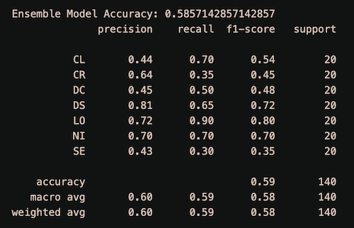

In scientific research, classifying and organizing articles is crucial due to the increasing number of publications. Using Transformer models and ensemble learning is an effective method for automated categorization. Transformers excel in processing language and complex data, while ensemble learning combines independent models to enhance overall accuracy and generalization.
This approach aids researchers, students, and experts in accessing relevant materials easily.
The system architecture comprises three main classification models:
The challenge is how to automatically categorize scientific articles into specific topics, fields, or research types.
Given the diversity and complexity of articles, accurate automated classification is a significant challenge.
The input consists of abstracts of scientific articles represented as text.
The output is the classification of each article into topics, fields, or research types. For example, labels could be
topics like biology, machine learning, physics, or fields like medicine, information technology, economics.
The goal is to predict and assign an appropriate label to each article based on its content and context.
In the context of this project, the articles will be classified into the following 7 groups:
The dataset provided for the sharing task of "The First Workshop and Shared Task on Topic Classification in Scientific Articles" (SPDRA 2021) includes 16,800 training examples, 11,200 validation examples, and 7,000 test examples.
| Category | Train | Validation | Test |
|---|---|---|---|
| Computation and Language (CL) | 2,740 | 1,866 | 1,194 |
| Cryptography and Security (CR) | 2,660 | 1,835 | 1,105 |
| Distributed and Cluster Computing (DC) | 1,042 | 1,355 | 803 |
| Data Structures and Algorithms (DS) | 2,737 | 1,774 | 1,089 |
| Logic ib Computer Science (LO) | 1,811 | 1,217 | 772 |
| Networking and Internet Architecture (NI) | 2,764 | 1,826 | 1,210 |
| Software Engineering (SE) | 2,046 | 1,327 | 827 |
| Total | 16,800 | 11,200 | 7,000 |
Reddy, Saichethan; Saini, Naveen (2021), “SDPRA 2021 Shared Task Data”, Mendeley Data, V1, doi: 10.17632/njb74czv49.1
However, due to time and computational constraints, the report only utilizes a random sample of 100 documents. The distribution of topics and documents across training, validation, and test sets is as follows:
| Category | Train | Validation | Test |
|---|---|---|---|
| Computation and Language (CL) | 100 | 20 | 20 |
| Cryptography and Security (CR) | 100 | 20 | 20 |
| Distributed and Cluster Computing (DC) | 100 | 20 | 20 |
| Data Structures and Algorithms (DS) | 100 | 20 | 20 |
| Logic ib Computer Science (LO) | 100 | 20 | 20 |
| Networking and Internet Architecture (NI) | 100 | 20 | 20 |
| Software Engineering (SE) | 100 | 20 | 20 |
| Total | 700 | 140 | 140 |
Confusion Matrix:
A confusion matrix is a matrix chart used to evaluate the performance of a classification model.
It helps measure the differences between predictions made by the model and the actual labels.
How to interpret the confusion matrix:
The model predicts results for 140 text segments from the test set.
The results of the confusion matrix show that the standalone RoBERTa group has scattered prediction results and a lower
number of correct predictions compared to the other models.
Combining predictions from multiple models and using voting effectively mitigated the weaknesses of standalone RoBERTa. However, the TF-IDF + Logistic Regression model provides the
best results.
==> Therefore, for this project, model enhancement could involve assigning weights to the model votes (Weighted Votings) to further improve
ensemble model performance.
Model Accuracy:
Model has the accuracy score reachs 59%.
However, resource and time constraints have hindered achieving a better result.
The above is a demonstration on a very small subset of the dataset. When performed on the entire dataset, it is possible to expect an accuracy of over 90%.
